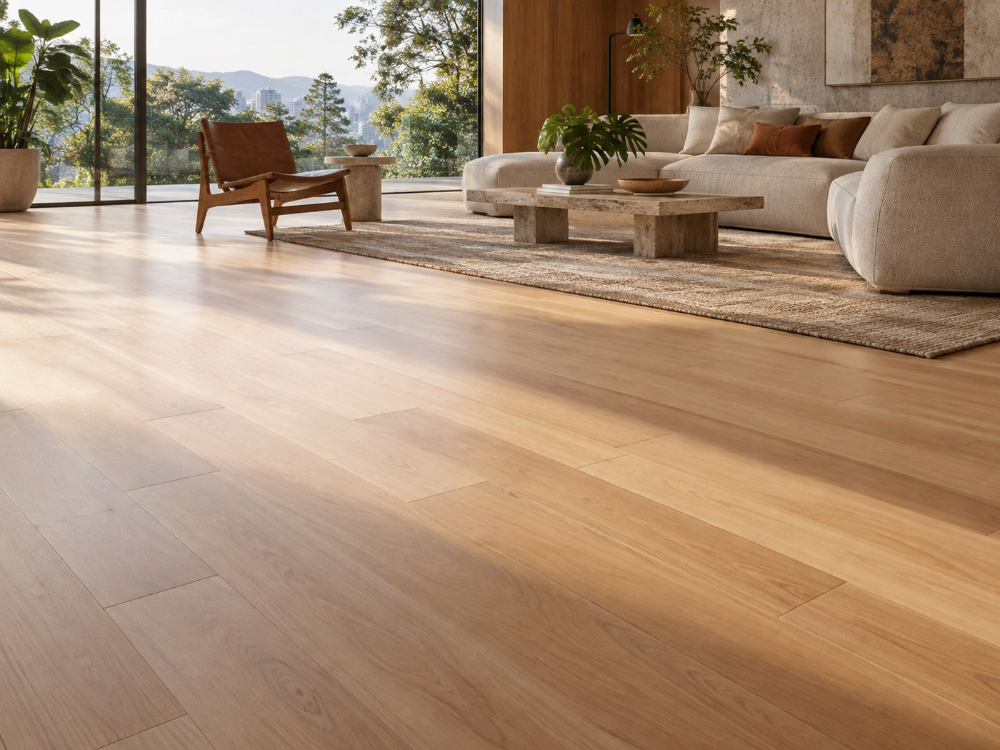

Imagem ilustrativa gerada por IA. Confirme cores e especificações no orçamento.
Pisos · Curadoria ARQSELECT
Piso Tauari Natural
Tábuas claras de madeira Tauari com acabamento natural.
MaterialMadeira Tauari
EspecificaçãoDefinida conforme o projeto